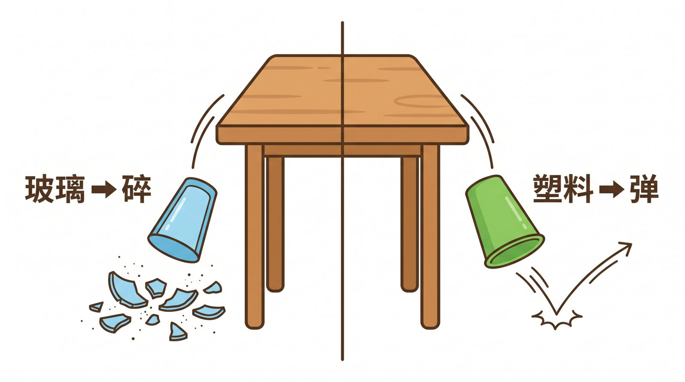
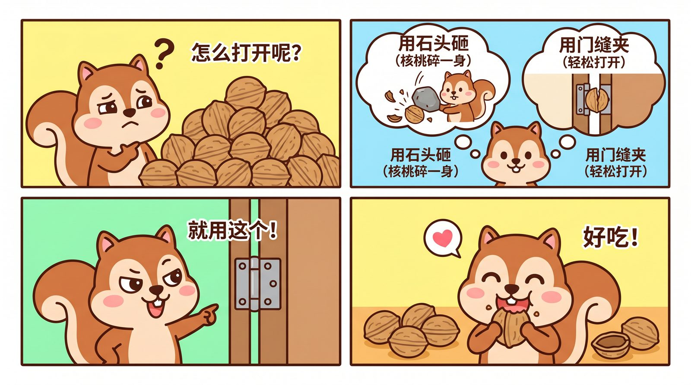
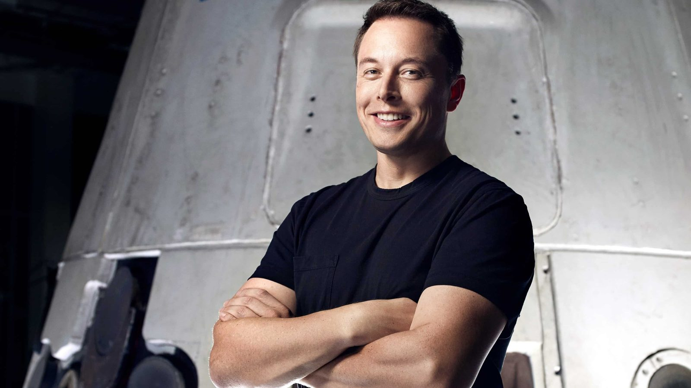
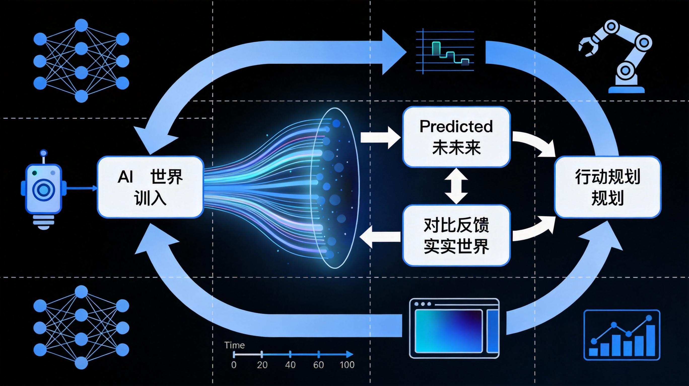
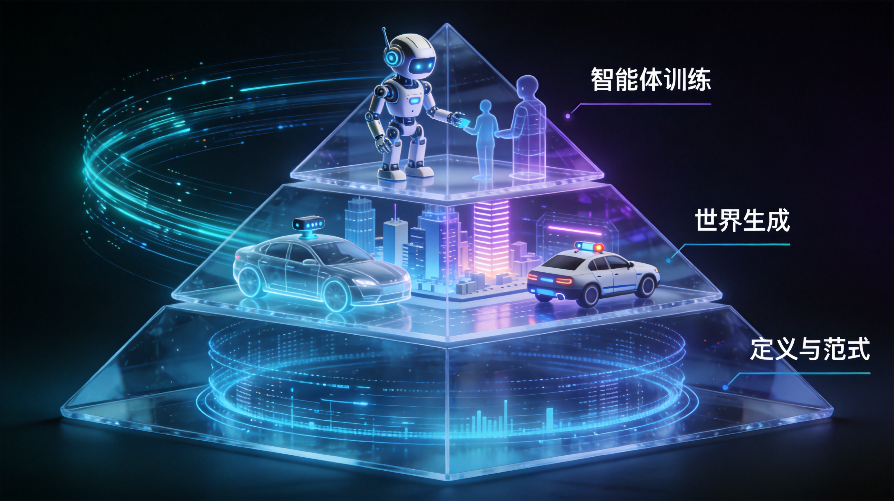
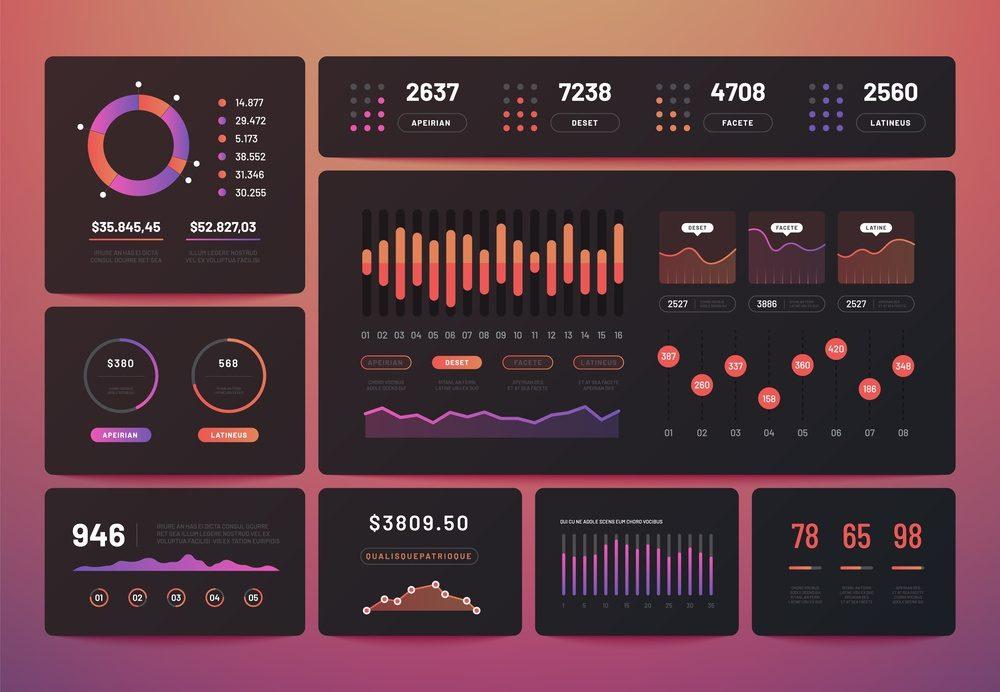
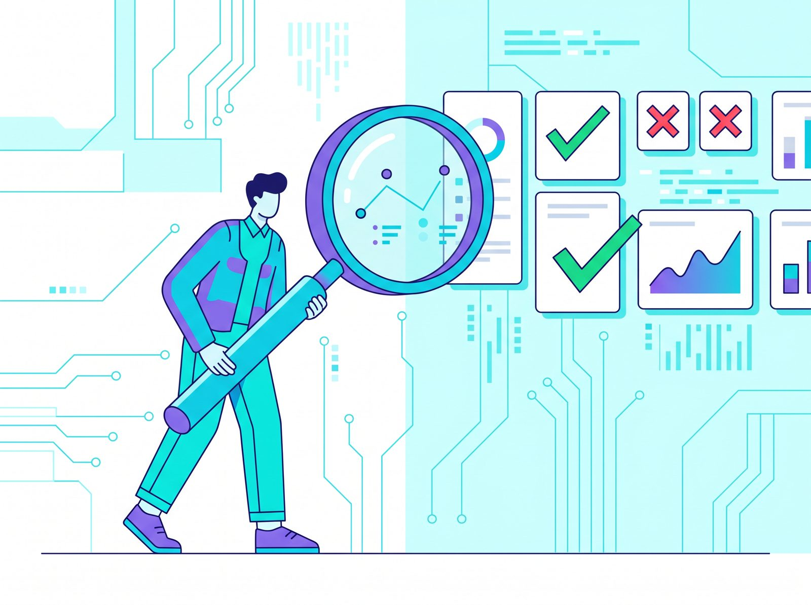
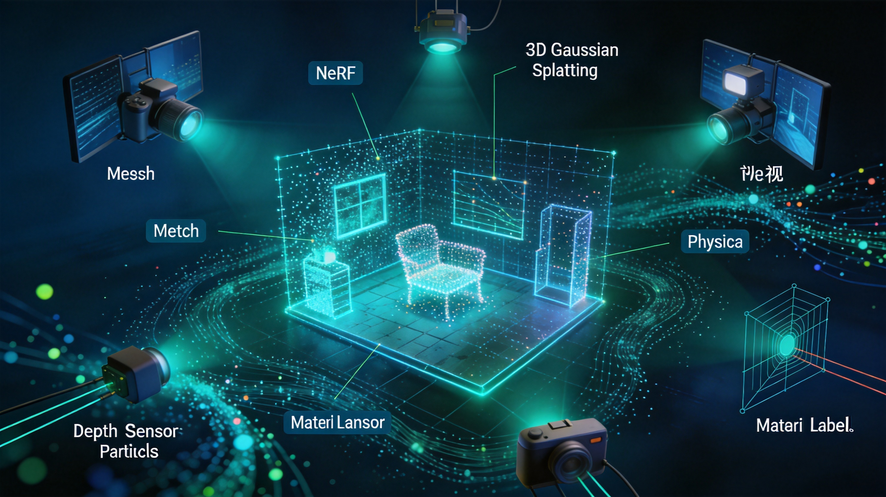
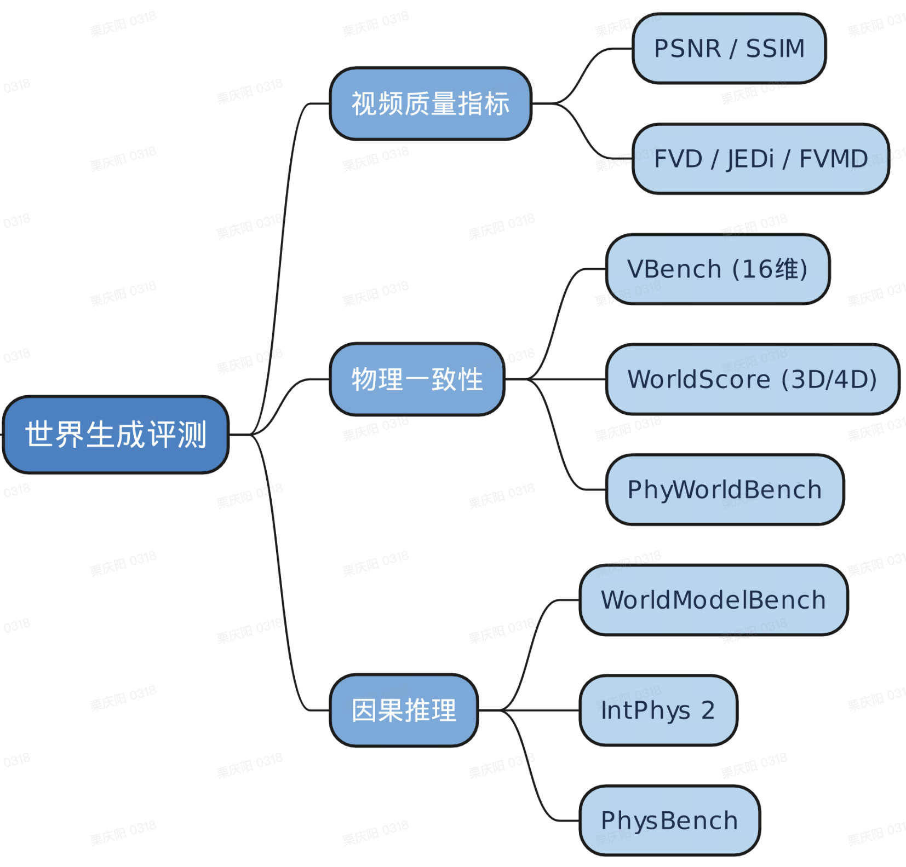

将视频拖入下方区域，直接展示世界模型的生成、模拟或交互效果。
如果一个智能体要在世界里做事，它至少要解决三件事：我看到了什么？接下来会发生什么？我应该怎么做？世界模型就是为这三件事服务的内部模拟系统。
把复杂的图像、视频、传感器信号压缩成模型能操作的状态。
模拟“如果这样做，下一秒会怎样”，建立物理和因果直觉。
在内部世界先试错，选择更安全、更有效的下一步动作。
普通识别模型回答“这是什么”；世界模型进一步回答“它会怎样变化、我做什么会改变它”。这就是从静态识别到动态理解的跃迁。

玻璃杯会碎，塑料杯会弹，装满水的杯子会洒。人类不是背答案，而是拥有对材质、重力、碰撞和因果的直觉。世界模型要补上的，就是这种“后果感”。它要理解的不是“杯子”这个词，而是材质、受力、桌面高度、落地角度共同决定的结果。

一只松鼠想打开核桃：用石头砸，可能把核桃砸飞；用门缝夹，可能更稳定；直接咬，可能费力又危险。真正的智能不是把所有动作都试一遍，而是在内部世界里预演“如果我这样做，会发生什么”。
这也是世界模型与普通生成模型的分界：生成模型更关注“结果像不像”，世界模型更关注“过程是否合理、动作是否可执行、后果是否可预测”。
世界当前是什么样：物体、位置、材质、速度、约束条件。
智能体做了什么：推、抓、移动、刹车、旋转、打开。
动作之后世界如何变化：碎裂、弹起、掉落、碰撞、成功或失败。
世界模型不是突然出现的新词。它先来自认知科学中的内部表征，再进入强化学习、视频生成、3D空间智能和具身智能。
人在行动前，会先在脑中模拟可能发生的过程，再选择行动。这是“脑内沙盘”的早期思想。
将高维观测压缩为潜在表示，用记忆模块预测未来，再用控制器在内部世界里学习策略。
视频生成展示世界模拟潜力；交互世界强调实时操控；JEPA 强调潜在空间预测；3D世界生成强调空间资产与仿真环境。
真正的终点不是生成漂亮画面，而是让智能体在可交互世界中反复试错、修正和迁移到现实。

世界模型训练的最小闭环，是让模型不断学习“当前状态 + 动作 / 时间变化 → 下一状态”。它学的不是单张图，而是世界如何转移。

V（Vision）负责把观测压缩成潜在状态；M（Memory / Model）负责预测世界状态转移；C（Controller）负责在内部世界中选择动作。三者合起来，才是“能想象后果并行动”的 AI。
现在行业里很多系统都叫世界模型，但它们处在不同层级：有的更像渲染器，有的更像模拟器，有的才开始进入行动规划。
擅长生成连续画面，能隐式学习运动、重力和视觉统计规律。
生成可漫游、可导出的空间资产，强调几何、材质、多视角一致性。
支持用户或智能体实时进入世界、行动并看到环境反馈。
让 Agent 在世界中反复试错，学习任务规划与行动策略。
这三层构成理解世界模型的主骨架：底层明确概念，中层呈现技术现状，顶层说明为什么数据训练和 AI 训练师会变得更重要。
在生成世界或现实世界中学习决策与行动能力。
构建可持续、可交互、符合物理与语义规律的环境。
明确状态、动作、观测、预测、规划等基本问题。

世界模型要学的是状态转移，所以数据不只是图片、标签和描述，而是空间、时间、动作、反馈、物理属性和反事实样本。数据越接近真实世界的因果链，模型越可能学到可迁移的世界规律。
物体类别、属性、材质、语义、边界、位置关系。
分类准确、属性完整、边界清楚、语义不混淆；尤其要避免把“像”误标成“是”。
同一物体在不同角度下的空间一致性，以及遮挡后的身份保持。
身份不漂移、形状不变形、纹理保持一致；同一物体在转身、绕行、放大后仍能被识别。
运动、遮挡、速度、加速度、前后因果和事件连续性。
是否跳帧、穿模、违反重力、动作后果不合理；是否出现物体凭空消失或突然变形。
动作、状态变化、奖励、失败原因、可执行性和任务路径。
动作是否可做、结果是否符合常识、失败是否可解释；例如“推门”必须区分门锁、门轴、推拉方向。
条件改变后结果如何变化：如果材质不同、速度不同、支撑点不同，未来也应不同。
构造一组只改变一个变量的样本，用来测试模型是否真的理解因果，而不是记住表面相关性。
边界场景、异常场景、罕见材质、极端光照和复杂遮挡。
把模型最容易错的 case 沉淀成专题库：穿模、漂移、尺度错乱、碰撞无反馈、物理反常。

越往世界模型走，越需要人把“常识、因果、物理合理性、边界条件”变成可作业、可质检、可迭代的数据标准。训练师的价值，是把真实世界的模糊经验，拆成模型可以学习、可以评测、可以回流的信号。
例如一个视频“看起来不真实”，不能只写“不好”。要拆成物体身份是否保持、运动是否连续、碰撞是否有反馈、遮挡是否恢复、动作结果是否符合常识、物理规律是否被破坏。
自动驾驶关注车道、行人、速度和风险；机器人关注抓取、碰撞、可达性；3D空间关注尺度、材质、可漫游。不同世界要有不同状态、动作和评价标准。
世界模型的未来不唯一，很多 case 没有唯一 Ground Truth。分歧不是噪声，而是沉淀规则、补充边界、构建高价值评测集的入口。
第一层判断画面是否合理；第二层判断时间是否连续；第三层判断因果是否正确；第四层判断行动是否能达成任务。分级越清楚，训练目标越稳定。
| 训练师动作 | 对应世界模型能力 | 产出物 |
|---|---|---|
| 拆维度 | 把“真实感”转成可学习信号 | 评分表、标注规范、示例库 |
| 做盲标与混检 | 降低主观偏差，提升规则一致性 | 一致性数据、仲裁结论 |
| 沉淀错例 | 让模型补齐薄弱世界规律 | 长尾 case、负样本、回流集 |
| 构建评测集 | 验证模型是否真的懂物理和因果 | Benchmark、能力分级、看板 |

一张图只告诉模型“这个角度长什么样”；3D数据要让模型知道“换个角度仍是同一个物体”，并理解形状、材质、尺度、遮挡、碰撞和可交互结构。

由顶点、边和面构成，适合游戏、仿真、碰撞体和可编辑资产。训练和标注时要关注面片是否破损、拓扑是否干净、法线是否正确。
通过光线和体渲染学习场景密度与颜色，适合新视角合成。质量评估重点是视角切换是否连续、细节是否漂移、遮挡区域是否合理。
用显式高斯粒子表达场景，兼顾质量和效率。适合空间智能展示，但需要关注粒子漂浮、边缘毛刺、透明物体和快速运动场景。
| 3D数据维度 | 为什么重要 | 常见问题 |
|---|---|---|
| 几何闭合 | 决定物体是否能被稳定观察和碰撞 | 破洞、面片翻转、结构断裂 |
| 材质稳定 | 决定多视角下是否像同一个物体 | 贴图拉伸、反光异常、纹理漂移 |
| 尺度一致 | 决定机器人/仿真能否使用 | 人车比例错误、场景尺寸失真 |
| 交互可用 | 决定能否从“可看”走向“可训练” | 无碰撞体、门窗不可开、物体不可抓取 |
3D数据不是一种格式，而是一组面向不同目标的世界表达方式：有的适合工程交付，有的适合高质量浏览，有的适合机器人和自动驾驶计算。
由顶点、边、面组成，结构明确、可编辑、可绑定骨骼，也适合做碰撞体和交互逻辑。缺点是透明、反光、细碎结构和遮挡区域容易重建不完整。
游戏 / XR / 数字孪生可编辑用大量带颜色、透明度、尺度和方向的高斯点表达场景，渲染快、质量高。缺点是语义结构不如 Mesh 清晰，做物理交互前通常还要语义拆分或转换。
虚拟漫游实时渲染用神经网络学习空间密度和颜色，能表达复杂光照和视角相关效果。缺点是训练和渲染成本较高，不便直接编辑、碰撞或对象级标注。
新视角合成研究评测用空间点集合表达形状，可来自 LiDAR、深度相机或 SfM。它对位置、轮廓、尺度很直接，但表面不连续、材质和语义表达较弱。
自动驾驶机器人感知把空间切成网格，标注占用、语义、可通行性或状态变化。它非常适合导航、碰撞检测和状态转移评测，但视觉细节和材质表达弱。
BEV / Occupancy可通行空间把视频、全景图、传感器、动作轨迹和反馈放在一起，才能训练世界模型真正理解“状态如何随动作变化”。难点是采集、同步、标注和质检成本都更高。
视频 + 3D + Action世界模型训练标好3D数据，不是只标“这是什么”，而是要把几何、纹理、尺度、空间关系和可交互属性一起标清楚，让模型学到一个可验证的空间世界。
检查缺面、破洞、粘连、穿模、悬浮、边界不贴合；3D框、Mask、关键点要能在不同视角中回投对齐。
检查贴图拉伸、错位、糊块、反光异常、透明物体处理、远近视角外观漂移，避免“看起来像但不是同一个物体”。
人、车、桌椅、门窗等比例要符合常识；地面、重力方向、坐标系和相机位姿要统一，不能只在单一视角好看。
标出可抓取、可推动、可旋转、可开关、可通行、可碰撞等 affordance，重点关注动作后状态是否可解释。
| 质检方法 | 适用场景 | 关键价值 |
|---|---|---|
| GSB | 对比两个结果谁更好 | 快速计算 win rate，适合模型策略对比 |
| 打分法 | 多个模型/样本横向比较 | 把“好不好”拆成几何、材质、尺度、交互等维度 |
| 盲标 / 背靠背 | 高难样本、争议样本 | 降低个人偏见，优先定位分歧 case |
| 混检 + 埋雷 | 多人作业和复杂项目 | 训练质检能力，发现漏标、错标和规则理解偏差 |
世界模型评测的难点，是用有限、离散、可计算的指标衡量开放、连续、有因果关系的世界。好的评测体系既要看画面质量，也要看物理一致、因果推理、交互可用和任务完成。

PSNR、SSIM 衡量像素和结构相似度；FVD 更关注视频分布和时序质量；VBench 可覆盖视频生成中的主体一致、运动合理、画面美学等维度。
PhysBench、IntPhys 等关注重力、碰撞、遮挡、流体、物体恒常性。核心不是“好不好看”，而是是否违反基础物理和常识。
WorldModelBench 这类方向关注条件改变后，模型能否推断不同结果：如果球更重、地面更滑、杯子换材质，后果是否随之改变。
对机器人、自动驾驶和 Agent 场景，评测还要看动作是否可执行、路径是否有效、失败是否可恢复、策略是否能迁移到新环境。
PSNR/SSIM/FVD 能提供稳定量化结果，但它们不一定能捕捉“因果错误”或“物理不合理”。
人工可以判断穿模、漂移、违背常识、任务失败，但必须用维度化打分、盲标和仲裁控制主观差异。
成熟方案通常把自动指标、模型裁判、人工质检、长尾样本回流结合起来，形成持续更新的评测闭环。
| 评测难点 | 原因 | 数据团队可做什么 |
|---|---|---|
| 世界边界模糊 | 视频、3D、自动驾驶、机器人目标不同 | 先定义垂类世界，再定状态、动作、指标 |
| Ground Truth 不唯一 | 真实世界下一秒可能有多种合理未来 | 引入合理性分级、候选答案池和人工仲裁规则 |
| 能力分级缺失 | “好/坏”无法区分是视觉问题、物理问题还是任务问题 | 建立从画质、时序、物理、因果到行动的分层评分 |
| Sim2Real Gap | 仿真表现好，不代表现实可用 | 补充真实采集、域随机化、线上错例和现实反馈 |
| 物理合规难量化 | 力、速度、材质、碰撞很难单指标描述 | 构建维度化评分和长尾场景库 |
| 因果 vs 相关性 | 模型可能只记住表面模式，并没有理解变量关系 | 设计反事实样本和变量控制样本 |
| Benchmark 易过时 | 模型迭代快，测试集会被刷满 | 持续更新失败样本、争议样本和边界样本 |
| 主客观鸿沟 | 自动指标高，不一定符合人的真实感判断 | 用人工偏好、专家仲裁和自动指标共同校准 |
世界模型把 AI 训练从单点标签带入连续世界：模型要学习状态、动作、反馈、物理、因果和长期任务。数据团队的能力边界也会从“生产标注结果”，扩展到“定义世界、评测世界、修正世界”。
自动驾驶、机器人、3D空间、游戏交互、视频生成的目标不同，状态空间和动作空间也不同。
场景范围、能力分级、状态/动作/反馈定义。
不仅收集图片和文本，还要收集多视角、视频时序、动作轨迹、失败过程、反事实变化。
训练集、负样本、长尾样本、变量控制样本。
既看 PSNR/SSIM/FVD/VBench，也看 PhysBench/IntPhys/WorldModelBench 代表的物理、因果和反事实能力。
多维评分表、Benchmark、盲标/混检/仲裁机制。
穿模、漂移、碰撞无反馈、尺度错误、行动失败，都是模型世界观的缺口。
错例库、专题规则、回流训练数据。
3D资产不仅要好看，还要几何闭合、尺度正确、材质稳定、可碰撞、可交互，才能进入仿真和智能体训练。
3D资产、仿真环境、Sim2Real校准样本。
这一页用于现场演示“3D数据不是平面图片，而是可以从不同角度观察的空间对象”。用鼠标或手指拖动模型，就能改变观察角度。
同一个对象可以从前后、上下、左右多个视角观察，训练时要保证身份、尺度和纹理一致。
可拖动旋转能帮助听众直观理解：3D数据的价值不只是“好看”，而是支持观察和交互。
标注时要同时关注几何边界、朝向、遮挡关系、坐标系和可操作属性。
世界模型不只是学“画面像不像”，而是学“如果我这样做，世界会如何改变”。因果链标注的核心就是记录这种“状态+动作→新状态”的逻辑链条。
State：记录动作前的对象位置、姿态、属性及空间关系（支撑、遮挡等）。
Action：记录动作主体、对象、类型（推、抓、开等）及力度方向参数。
Next State：记录动作后的位移、形变、状态变化及环境反馈。
必须明确哪个动作直接导致了变化。排除背景中同时发生但无关的干扰因素，避免模型学到错误的“假相关”。
动作必须发生在结果之前，对象 ID 在多帧中必须保持连续，不能跳变。
重力、碰撞、遮挡、摩擦要符合常识。物体不能无缘无故移动或悬浮。
每条标注都要能说明“为什么结果变了”，而不是只标出结果变了。
标注动作是否真的改变了世界状态，以及世界是否支持 Agent 继续下一步行动。